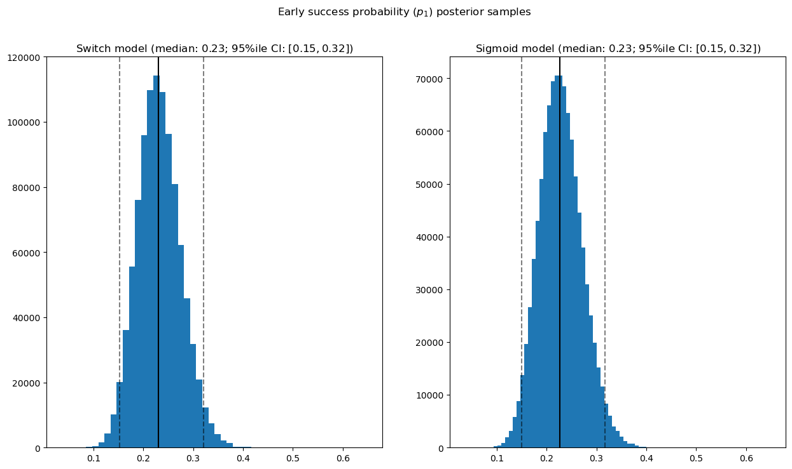
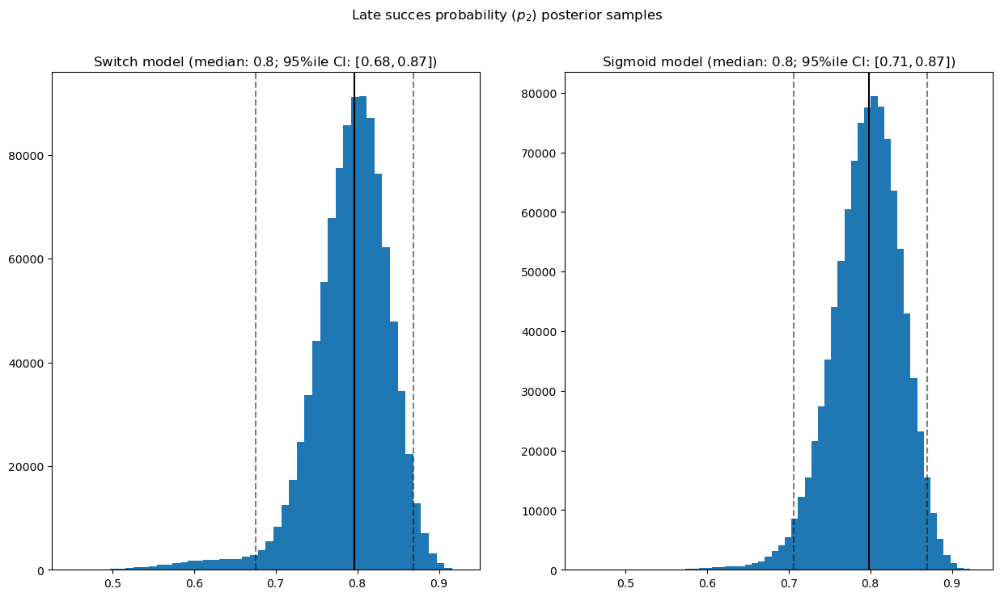
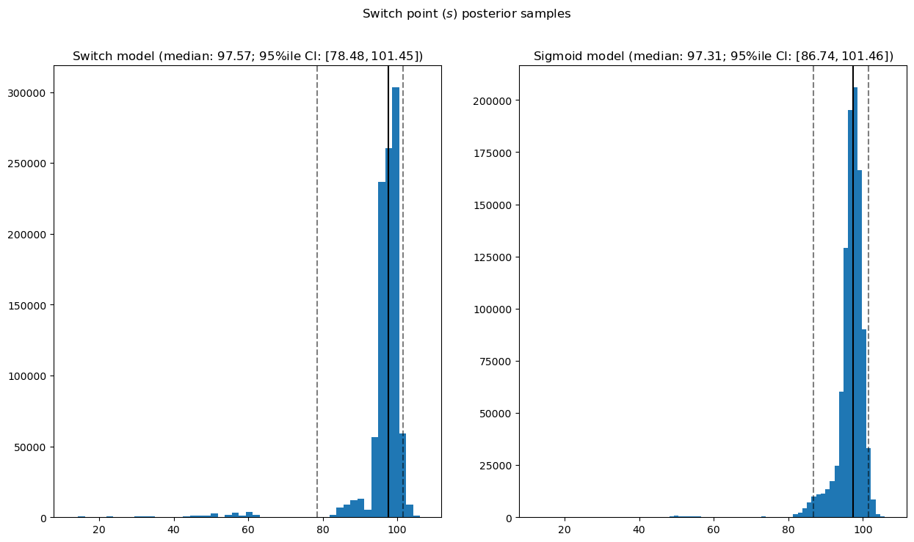

import tensorflow_probability as tfp
tfd = tfp.distributions
tfb = tfp.bijectors
import tensorflow.compat.v2 as tf
tf.enable_v2_behavior()
#import tensorflow as tf
import matplotlib.pyplot as plt
plt.rcParams['figure.figsize'] = (15,8)
import numpy as np
import pandas as pdBernouilli distribution
Simulated dataset
The data will be simulated from a binomial distribution:
\[ \begin{aligned} (X_i \mid p(t)) &\sim \mathcal{B}(p(t)) \\ &s \sim Uniform(t_0, t_n) \\ &\text{with }p(t) = \begin{cases} p_1 \mid t<s \\ p_2 \mid t>s \end{cases} \\ p_1 &\sim Beta(\alpha_1, \beta_1) \\ p_2 &\sim Beta(\alpha_2, \beta_2) \end{aligned} \]
p1 = 0.2
p2 = 0.75data1 = np.random.binomial(1, p1, size = 100)data2 = np.random.binomial(1, p2, size = 100)data = np.append(data1, data2).astype(np.float32)plt.plot(data, linewidth = 0, marker = 'o')
plt.plot(data.cumsum() / np.arange(1,len(data)+1))
Model specification
def model(p_fn):
outcome = tfd.JointDistributionNamed(dict(
p1 = tfd.Beta(concentration1=1., concentration0=1.,
force_probs_to_zero_outside_support=True),
p2 = tfd.Beta(1.,1., force_probs_to_zero_outside_support=True),
s=tfd.Uniform(0., high=len(data)),
x_i = lambda s, p2, p1: tfd.Independent(
tfd.Bernoulli(probs = p_fn(np.arange(len(data)), s, p2, p1)),
reinterpreted_batch_ndims=1)
))
return outcomedef p_switch(ys, s, p2, p1):
return tf.where(ys < s, p1, p2)def p_sigmoid(ys, s, p2, p1):
return p1 + tf.sigmoid(ys - s) * (p2 - p1)# two models with different switch functions
model_switch = model(p_switch)
model_sigmoid = model(p_sigmoid)def target_log_prob_fn(model, s, p1, p2):
return model.log_prob(s=s, p1=p1, p2=p2, x_i=data)models = [model_switch, model_sigmoid]
print([target_log_prob_fn(m, 100., 0.25, 0.75).numpy() for m in models]) # True parameters
print([target_log_prob_fn(m, 150., 0.8, 0.1).numpy() for m in models]) # Rather unlikely result[-108.97645, -109.699486]
[-261.89874, -258.78952]num_results = 10000
num_burnin_steps = 3000
@tf.function(autograph=False, jit_compile=True)
def make_chain(target_log_prob_fn):
kernel = tfp.mcmc.TransformedTransitionKernel(
inner_kernel=tfp.mcmc.HamiltonianMonteCarlo(
target_log_prob_fn=target_log_prob_fn,
step_size=0.05,
num_leapfrog_steps=3),
bijector=[
# The switchpoint is constrained between zero and len(years).
# Hence we supply a bijector that maps the real numbers (in a
# differentiable way) to the interval (0;len(yers))
tfb.Sigmoid(low=0., high=tf.cast(len(data), dtype=tf.float32)),
# Early and late disaster rate: The exponential distribution is
# defined on the positive real numbers
tfb.NormalCDF(),
tfb.NormalCDF(),
])
kernel = tfp.mcmc.SimpleStepSizeAdaptation(
inner_kernel=kernel,
num_adaptation_steps=int(0.8*num_burnin_steps))
states = tfp.mcmc.sample_chain(
num_results=num_results,
num_burnin_steps=num_burnin_steps,
current_state=[
# The three latent variables
tf.ones([], name='init_switchpoint'),
#tf.ones([], name='init_early_disaster_rate'),
tf.cast(.99, tf.float32, name='p1_init'),
#tf.ones([], name='init_late_disaster_rate')
tf.cast(0.5, tf.float32, name='p2_init')
],
trace_fn=None,
kernel=kernel)
return states
switch_samples = [s.numpy() for s in make_chain(
lambda *args: target_log_prob_fn(model_switch, *args))]
sigmoid_samples = [s.numpy() for s in make_chain(
lambda *args: target_log_prob_fn(model_sigmoid, *args))]
switchpoint, estp1, estp2 = zip(
switch_samples, sigmoid_samples)/home/kantundpeterpan/miniconda3/envs/tf/lib/python3.12/site-packages/tensorflow_probability/python/__init__.py:70: UserWarning: TensorFloat-32 matmul/conv are enabled for NVIDIA Ampere+ GPUs. The resulting loss of precision may hinder MCMC convergence. To turn off, run `tf.config.experimental.enable_tensor_float_32_execution(False)`. For more detail, see https://github.com/tensorflow/community/pull/287.
warnings.warn(
2024-08-25 17:15:42.515971: I tensorflow/compiler/mlir/tensorflow/utils/dump_mlir_util.cc:268] disabling MLIR crash reproducer, set env var `MLIR_CRASH_REPRODUCER_DIRECTORY` to enable.num_results = 1000000
num_burnin_steps = 10000
@tf.function(autograph=False, jit_compile=True)
def make_chain(target_log_prob_fn):
hmc = tfp.mcmc.HamiltonianMonteCarlo(
target_log_prob_fn=target_log_prob_fn,
num_leapfrog_steps=3,
step_size=0.05)
kernel = tfp.mcmc.SimpleStepSizeAdaptation(
inner_kernel=hmc,
num_adaptation_steps=int(0.8*num_burnin_steps)
)
states = tfp.mcmc.sample_chain(
num_results=num_results,
num_burnin_steps=num_burnin_steps,
#
current_state=[
# The three latent variables
tf.ones([], name='init_switchpoint'),
#tf.ones([], name='init_early_disaster_rate'),
#tf.convert_to_tensor([0.25]*4, tf.float32, name='p1_init'),
tf.cast(0.5, np.float32),
#tf.ones([], name='init_late_disaster_rate')
tf.cast(0.5, np.float32),
],
trace_fn=None,
kernel=kernel)
return states
switch_samples = [s.numpy() for s in make_chain(
lambda *args: target_log_prob_fn(model_switch, *args))]
sigmoid_samples = [s.numpy() for s in make_chain(
lambda *args: target_log_prob_fn(model_sigmoid, *args))]
switchpoint, estp1, estp2 = zip(
switch_samples, sigmoid_samples)#estp1 = [tf.sigmoid(x) for x in estp1]#estp2 = [tf.sigmoid(x) for x in estp2]def _desc(v):
return '(median: {}; 95%ile CI: $[{}, {}]$)'.format(
*np.round(np.percentile(v, [50, 2.5, 97.5]), 2))
for t, v in [
('Early success probability ($p_1$) posterior samples', estp1),
('Late succes probability ($p_2$) posterior samples', estp2),
('Switch point ($s$) posterior samples', data[0] + switchpoint),
]:
fig, ax = plt.subplots(nrows=1, ncols=2, sharex=True)
for (m, i) in (('Switch', 0), ('Sigmoid', 1)):
a = ax[i]
a.hist(v[i], bins=50)
a.axvline(x=np.percentile(v[i], 50), color='k')
a.axvline(x=np.percentile(v[i], 2.5), color='k', ls='dashed', alpha=.5)
a.axvline(x=np.percentile(v[i], 97.5), color='k', ls='dashed', alpha=.5)
a.set_title(m + ' model ' + _desc(v[i]))
fig.suptitle(t)
plt.show()

